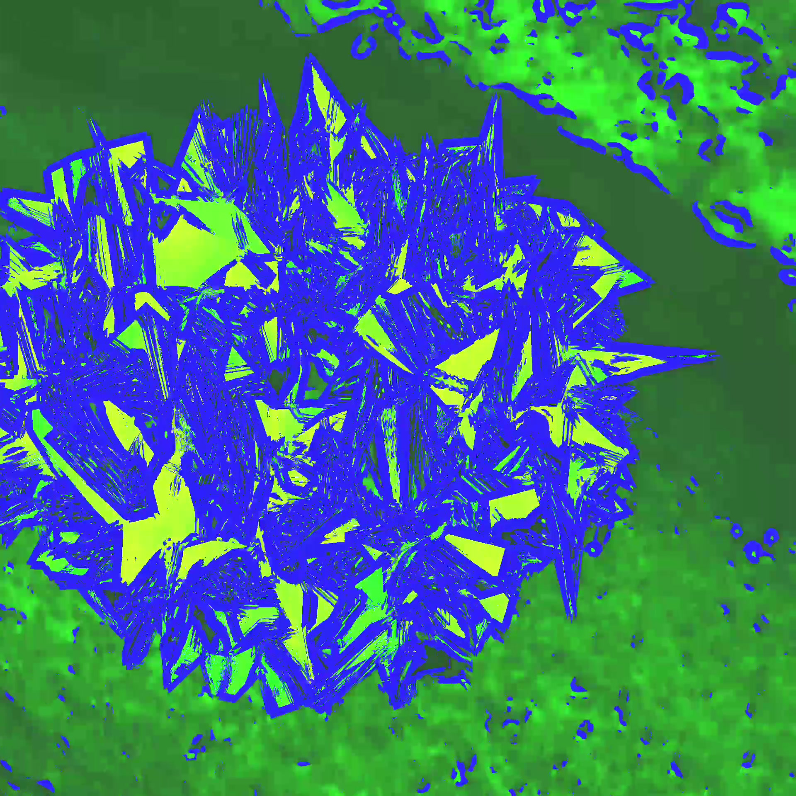
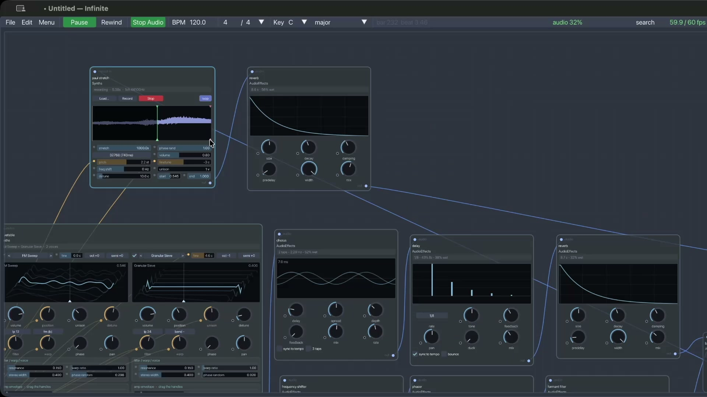
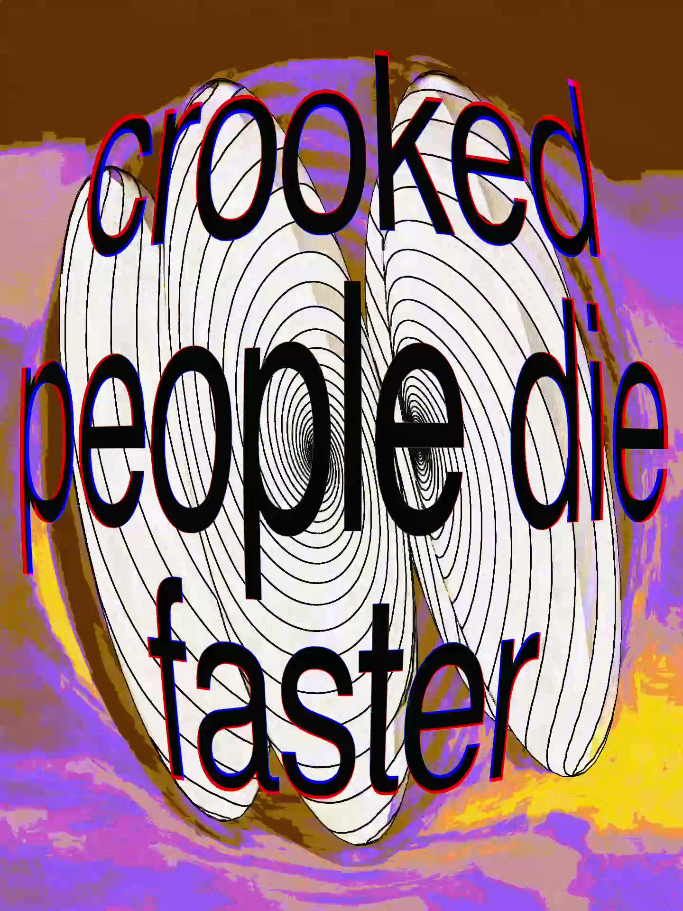

A visual notebook where sound,
light, and geometry connect.
Infinite is an all-in-one creative space for Mac. Instead of switching between three different apps, you wire real-time video filters, 3D shapes, and musical instruments together on a single boundless page.

What is Infinite?
Think of traditional creative tools: you use one app for video effects, a second app for 3D modeling, and a third app for making music. Getting them to talk to each other is frustrating and clunky.
Infinite combines all three into a single visual playground. You place building blocks (called nodes) on a canvas and connect them with cables. A drum beat can make a 3D sphere ripple; a webcam feed can modulate an audio synthesizer; a hand-drawn brush stroke can distort live video. Everything reacts in real time at 60 frames per second.
Four Creative Disciplines in Harmony
Here is what you can create and explore inside the workspace:
1. Real-Time Video & Shaders
Import videos, photos, and webcams. Add blurs, cinematic color curves, procedural noise, glitch effects, and one-click AI background removal that runs completely on-device without internet access.
2. Synthesizers & Sound Design
Build music with rich wavetable synths, metallic resonators for physical acoustic chimes, granular texture players, and 8-track drum sequencers. You can even host your favorite third-party Audio Unit (AU) plugins.
3. 3D Worlds & Cloth Physics
Load 3D models or generate procedural shapes. Scatter thousands of instances across surfaces, simulate waving ocean water, blow cloth with digital wind, and light everything with 32-bit realistic HDRI reflections.
4. Universal Modulation
The secret sauce: any output can control any knob. Plug an audio frequency analyzer into a 3D displacement slider, or map a video color channel to synth pitch. Creative cross-talk is effortless.
Listen to Music Made with Infinite
Every sound in these recordings was synthesized and generated inside the Infinite patch graph.
Audiovisual Modulation Loop
Infinite Synthesizer & Generative Engine
How Does It Work?
Here are three real examples of simple, powerful node recipes you can build in seconds:
Making Live Audio-Reactive Visuals
Connect your microphone or an audio file into an Audio Analyze node. It splits sound into 8 frequency bands. Wire the high-frequency band into a Ripple Filter connected to an image or webcam. When the snare hits, the image ripples instantly.

Turning Any Sample into Lush Ambient Pads
Drop any sound file into a PaulStretch node. It performs spectral time-stretching up to 50x without changing the pitch. Route the lush wash into an Algorithmic Reverb and adjust the diffusion. Instant cinematic soundtrack.

Simulating Soft Cloth & 3D Lighting
Create a 3D geometry mesh, plug it into a Cloth (PBD) physics solver, and attach a virtual wind force. Route the result into a Render 3D node with a 32-bit HDRI environment for photorealistic metallic reflections.

Browse the 160+ Node Collection
Every node is documented with a clear, plain-language explanation of what it does.
Opening Infinite on macOS in 3 Steps
Because Infinite is a free community open-source project and built as an ad-hoc signed app, macOS Gatekeeper may show a one-time security confirmation on your first launch. Here is how to open it:
Double-Click App
Drag Infinite.app to your Applications folder and double-click to open. macOS will state it is from an unverified developer.
System Settings
Open System Settings → Privacy & Security, scroll down to the Security section, and click "Open Anyway".
Terminal Shortcut (Optional)
Or remove the browser quarantine flag instantly with one line in Terminal:
xattr -dr com.apple.quarantine /Applications/Infinite.app
Download Infinite for macOS
A single self-contained application file. No Homebrew or terminal dependencies required to run.